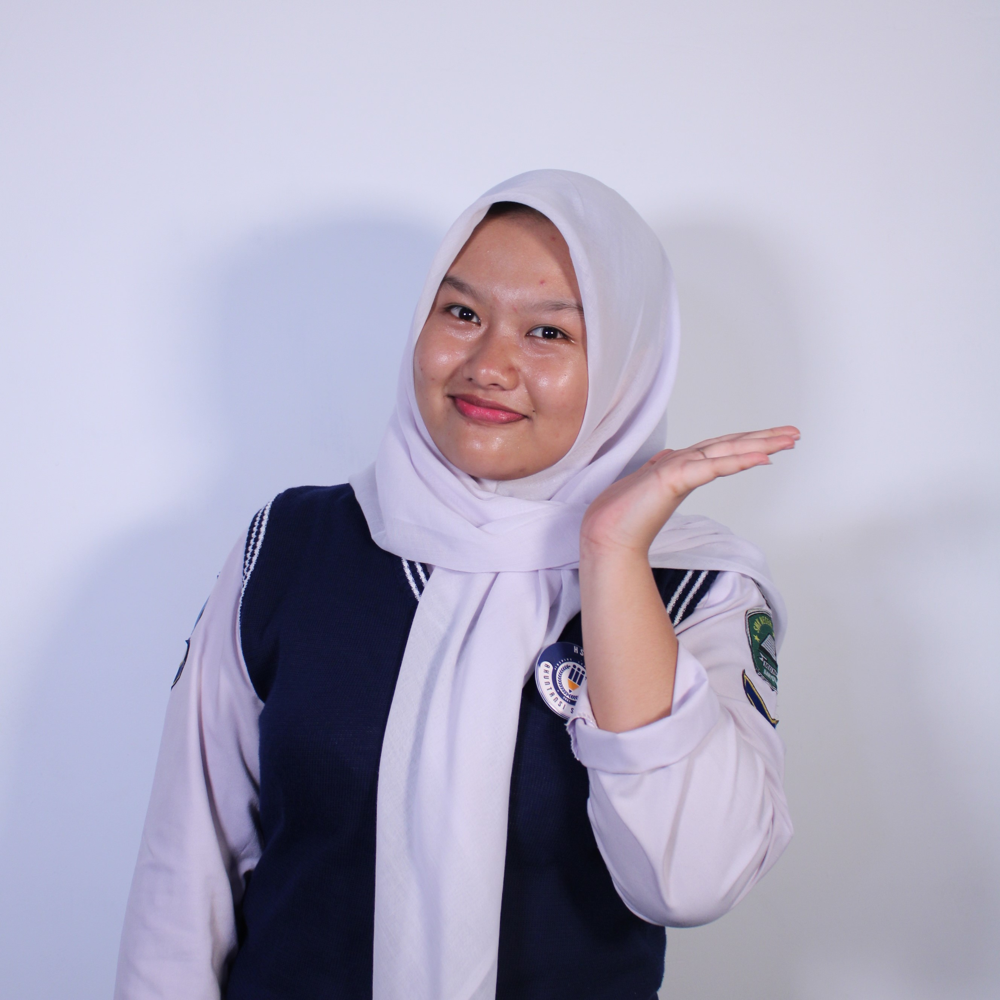
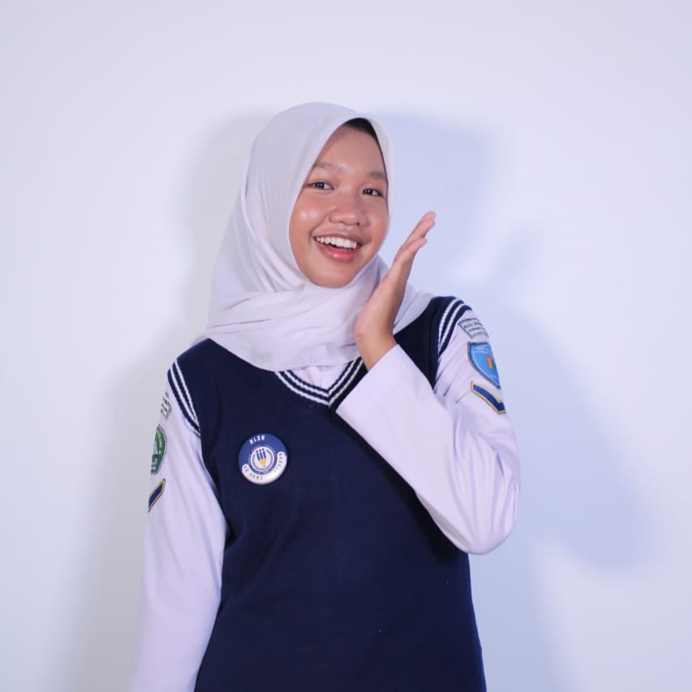
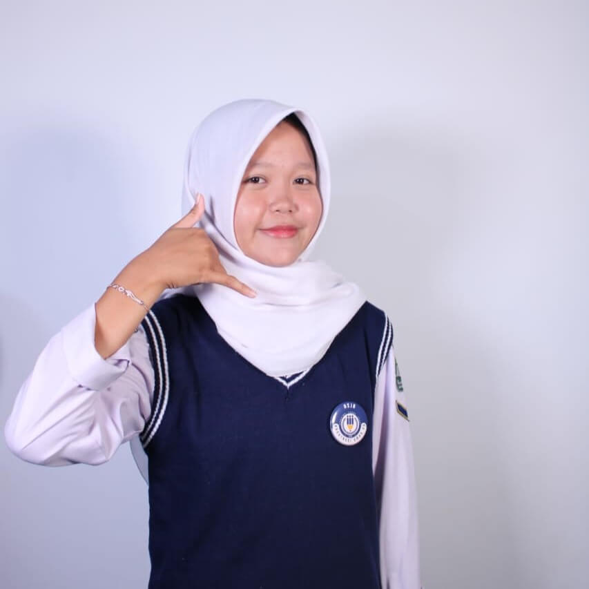

Tentang Kami
HSJA adalah sebuah organisasi yang berdedikasi untuk menciptakan dampak positif melalui tiga pilar utama: pendidikan, bisnis, dan komunitas. Kami percaya bahwa dengan mengintegrasikan ketiga area ini, kita dapat membangun ekosistem yang kuat, inovatif, dan berkelanjutan untuk semua anggota masyarakat. Kami menyediakan platform untuk belajar, berkolaborasi, dan bertumbuh bersama.
Pengurus Harian HSJA

Adelia Rahmawati Taher
Ketua

Srikandi Amalia Turnianto
Wakil Ketua

Sifa Dinda Rahmawati
Sekertaris
Visi & Misi
Visi
Menjadi organisasi terdepan dalam membangun masyarakat yang cerdas, mandiri secara ekonomi, dan solid secara sosial melalui sinergi antara edukasi, bisnis, dan komunitas.
Misi
- Menyediakan akses pendidikan berkualitas untuk semua kalangan.
- Mendorong inovasi dan kewirausahaan melalui program pendampingan bisnis.
- Membangun jaringan komunitas yang kuat dan saling mendukung.
- Menyelenggarakan kegiatan yang menginspirasi kolaborasi dan pertumbuhan bersama.